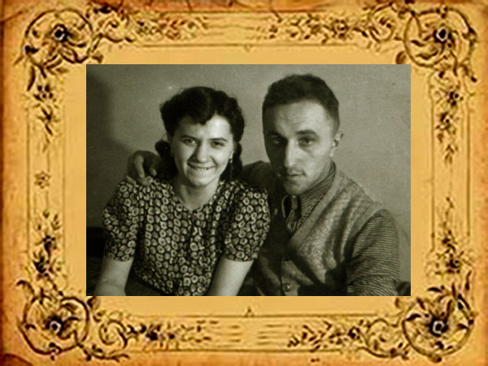

Emilia Sawicka


Emilia (pośrodku)
z siostrą Stefanią i bratanicą Kamilą.

Od lewej: Maria, Stefania, Binder, Maria-Janina, Kamila i Emilia.
Emilia Sawicka urodziła się 25.01.1881 roku w Bejscach. Wyszła za mąż za Franciszka Pietraszewskiego. Data ślubu nie jest znana.


Franciszek urodził się 27 sierpnia 1876 roku, najprawdopodobniej we wsi Przemyków. Dzień później został ochrzczony w kościele parafialnym w Koszycach. Jego chrzestnymi zostali Józef Głowacz (z Przemykowa) i Zofia Jakubówna.
1 stycznia 1893 roku przybył do Krakowa, by wyuczyć się piekarstwa. Pierwotnie Franciszek założył piekarnię przy ulicy Wiślnej. Dopiero w roku 1924 przeniósł się na ulicę Grzegórzecką pod numer 12.
Po ślubie małżonkowie zamieszkali w kamienicy przy Grzegórzeckiej, gdzie Franciszek rozwinął interes wspólnie z mężem siostry swojej żony - Wojciechem Popiołkiem. Dzięki temu stał się, wraz z żoną, współwłaścicielem piekarni przy ul. Barskiej 13.
Oboje zmarli w Krakowie i tam zostali pochowani. Emilia 31.01.1959 roku, Franciszek 6.10.1953 roku.
Niezwykle barwne losy rodziny Pietraszewskich spisane tutaj.
Józef zmarł we wczesnym dzieciństwie (urodził się w 1916 roku, żył dwa lata). Pozostali to:


Adam Pietraszewski z żoną.
Adam Pietraszewski urodził się w 1914 roku i również został piekarzem. Po wojnie wyemigrował z kraju. Zmarł w 1961 roku w Australii.
Antoni Pietraszewski

Antoni urodził się w 1910 roku. W wieku 15 lat rozpoczął naukę w zawodzie piekarza, i jak reszta rodziny prowadził potem piekarnię. Najpierw przy ulicy Limanowskiego 20 a potem przy ulicy Wawrzyńca 32. Gimnazjalny egzamin dojrzałości zdał 10 kwietnia 1929 roku. Dyplom mistrzowski Izby Rzemieślników uzyskał 18 lutego 1935 roku . W latach trzydziestych odbył przeszkolenie wojskowe w 38 pułku piechoty Strzelców Lwowskich a następnie w 4 pułku Strzelców Podhalańskich. Z tą ostatnią jednostką wyszedł na wojnę we wrześniu 1939 roku. Poległ pod Gródkiem Jagiellońskim. Pośmiertnie odznaczony medalem „Wierni do końca”..